MealCraft is an AI-driven meal planning app that knows your allergies, your preferences and what's already in your fridge.
TypeRetrospective redesign, mobile
RoleUX/UI designer, solo project
TimelineMar–Oct 2026
MethodsReview of the original app, competitor review (3 apps), redesign in Figma, heuristic evaluation (Nielsen's 10)
ToolsFigma, FigJam, Claude, Claude Design
What I did
01Listed what bothered me in the original app: onboarding, adding groceries and settings
02Tried three competitor apps popular in Ukraine: Dine4Fit, FatSecret and Yazio
03Redesigned the app from scratch, this time for mobile
04Checked the original app against Nielsen's 10 usability heuristics
(01)
Context
The idea came from my own experience. I noticed that in my household we were overspending on groceries, and about a fifth of them ended up in the bin by the end of the week. At first I just kept a meal plan in my notes. It helped me stick to my macros, and we started spending around 20% less on groceries.
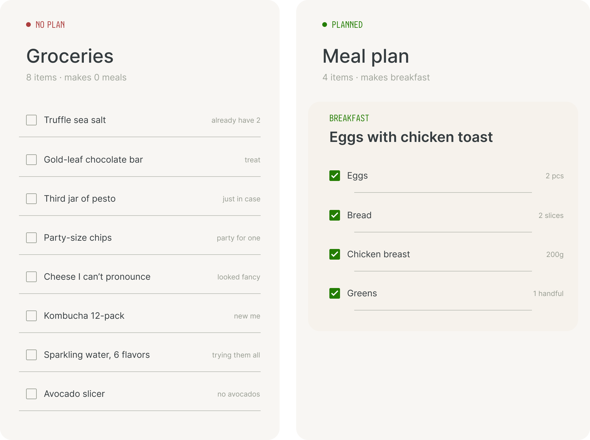
Groceries with no plan vs. a meal plan
1/5of our groceries ended up in the bin by the end of the week
~20%less spent on groceries once I kept a meal plan in my notes
Problem statement
There's no one place that connects what you have, what you like, and what you should cook.
Planning meals is a mess for a lot of people, me included. You forget what's in your fridge, you buy stuff you already have, you save recipes everywhere but never actually use them, and a lot of the suggestions you find online don't match your diet or what you've got at home.
(02)
The first version
It was the first app I'd ever worked on, so I had no idea where to start, and I have to warn you: it was a total mess. I began by thinking about which features I wanted to see and tried to draw the main idea of the app's flow.
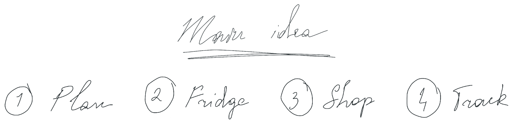
The main idea: plan, fridge, shop, track
Next, I made a list of features:
01
Receipt import
So the app “knows” what you already have in the fridge.
02
Macros & allergies
Macro targets, hard allergy blocks and taste preferences shape every recipe suggestion.
03
AI recipes
Recipes are written for you: built around what you have, sized to your macros, safe for your allergies.
04
Shopping list
A built-in shopping list that fills itself automatically, based on chosen recipes.
And I simply handed it to my partner, who's a developer, to build the app for me. I thought that was enough information for him. Spoiler: it wasn't.
When he finished, it hit me that the app was very difficult to navigate and not intuitive at all. Someone seeing it for the first time wouldn't even be able to tell it was a meal planning app.
(03)
The problem
So I decided to redesign the app from scratch, and this time for mobile. I already knew what the app should do. In the current version, three things bothered me most:
Right idea. Wrong execution.
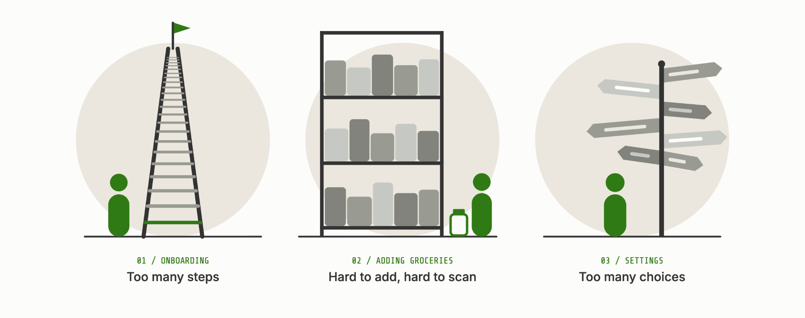
01
Onboarding
Overwhelming for a first-time user.
02
Adding groceries
Not intuitive. Categorising didn't work well, and it was hard for the eye to catch the information you need.
03
Settings
Way too broad, with too many options to customise.
Before drawing anything, I wanted to see what's already out there. I used to work as a marketing specialist, and looking at competitors first felt like a good idea.
I picked three apps that are popular in Ukraine: Dine4Fit, FatSecret and Yazio. I didn't really score them. I just downloaded each one on my phone and checked what worked well and what didn't.
Dine4Fit
1 / 3
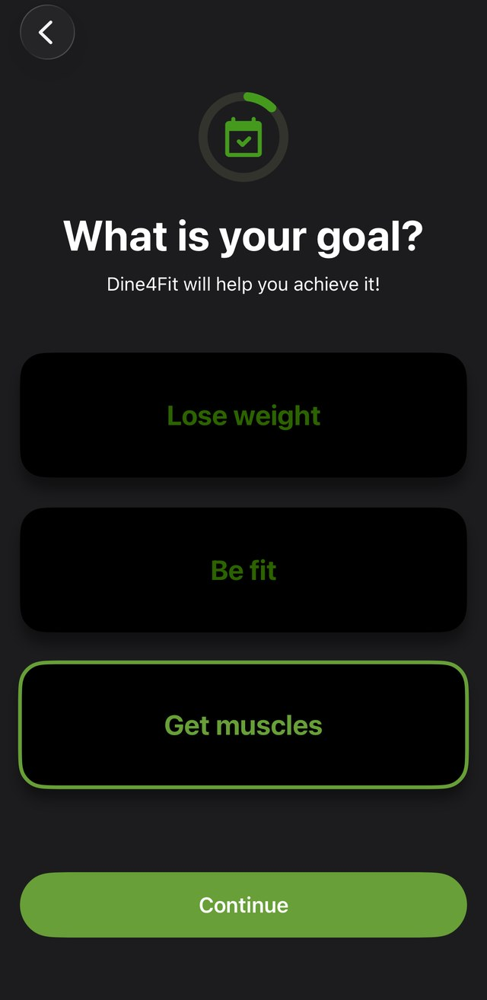
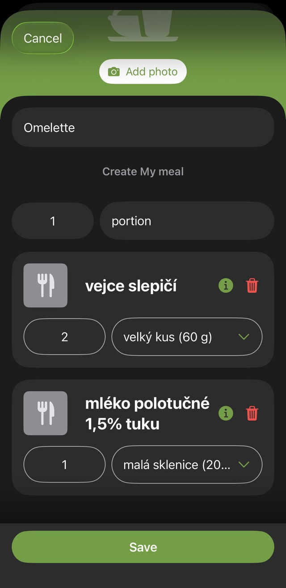
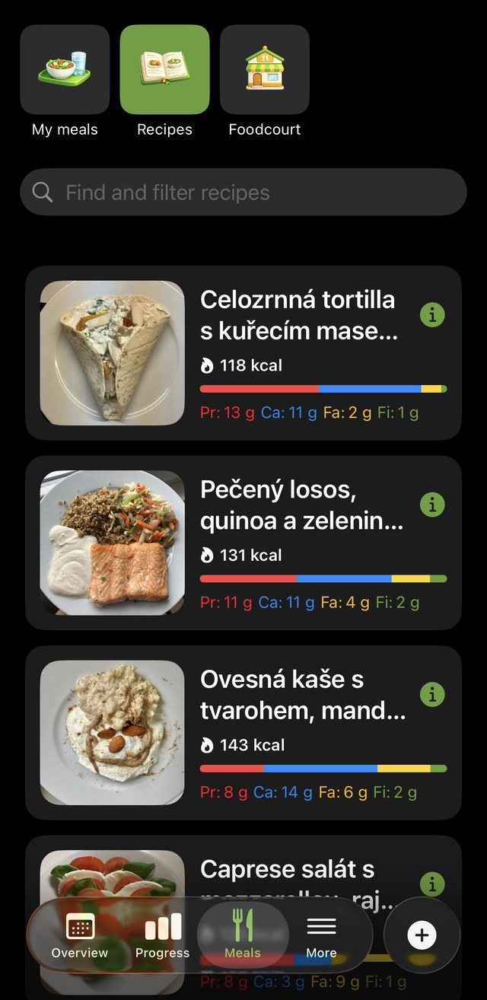
“What is your goal?”
One question per screen, easy to start.
Create my meal
Adding your own meal, ingredient by ingredient.
Recipes
You can search by name, but not by time, difficulty or mood.
FatSecret
1 / 4
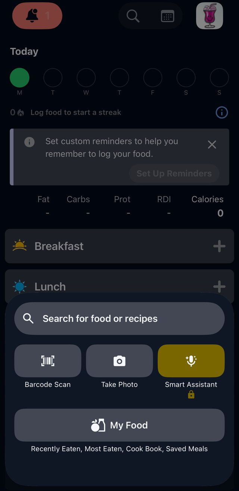
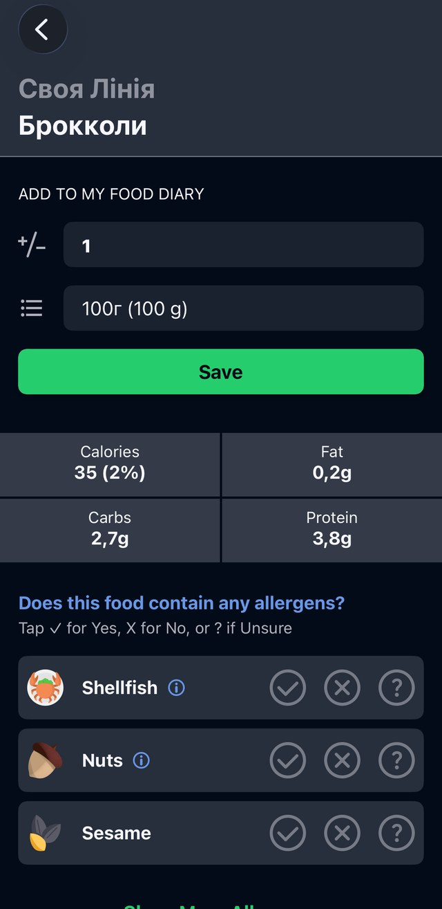
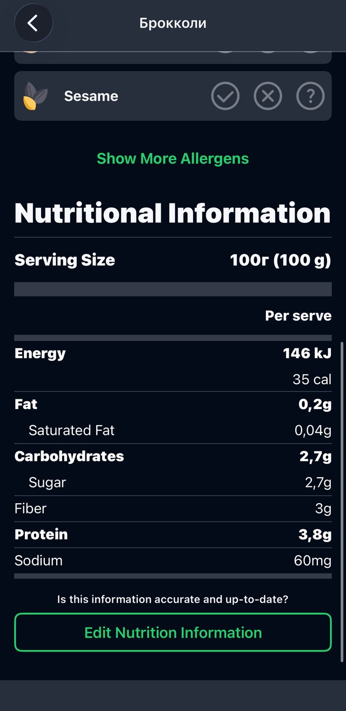
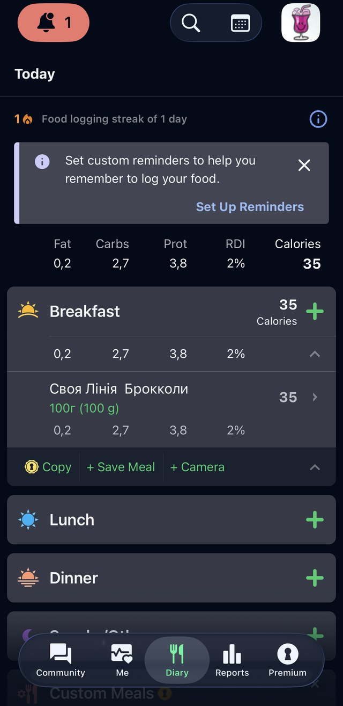
Add sheet
Lots of ways to add food, but the smartest one is locked.
Ukrainian brand
Lots of Ukrainian brands, and it lets you add allergies.
Nutrition
Full nutrition details for each food.
Food diary
The diary after logging breakfast.
Yazio
1 / 3
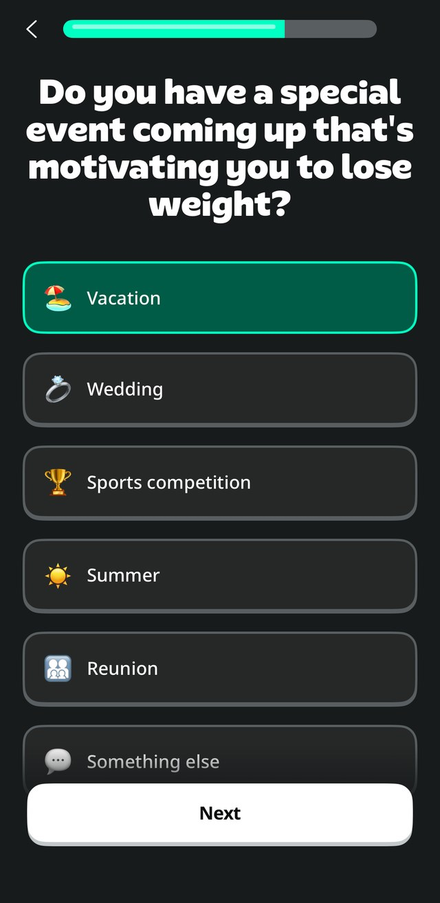
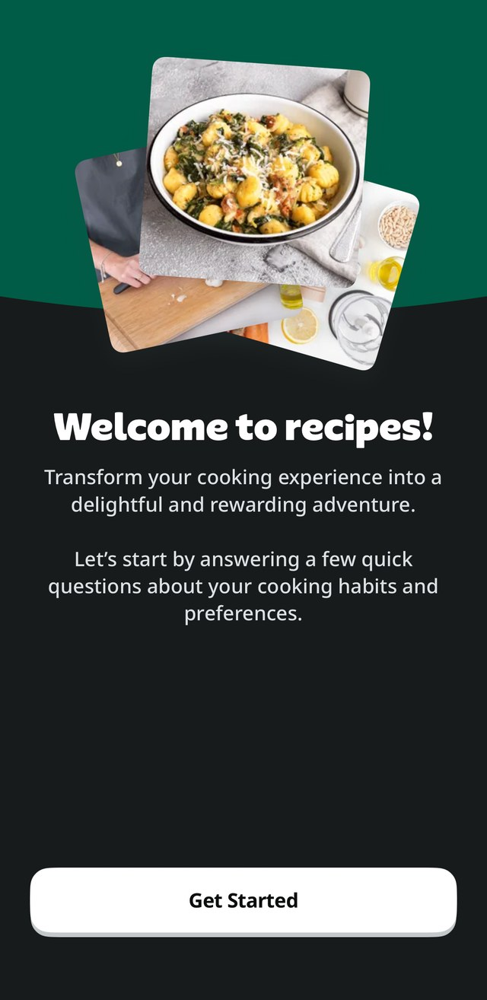
“Special event coming up”
Some onboarding questions didn't feel necessary.
Recipes
Recipes start with questions about your cooking habits.
Free version · screen recording
Most details are locked behind Pro.
What I took from it
Dine4Fit & Yazio
Showed me that onboarding can be short and clear.
FatSecret
Has lots of Ukrainian brands and lets you add allergies.
Yazio
Adjusts recipes to your cooking level.
The downside
Ads and paywalls were everywhere, and Yazio's free version felt more like a preview of the paid one.
The gap
None of them know what's in your kitchen.
Only Yazio has a shopping list, and only if you pay. Finding a recipe mostly meant scrolling, not looking for something you actually feel like cooking. That's the gap MealCraft is for: the Fridge became a main section, and recipes are matched to what you already have.
(05)
Redesigning on intuition
With all of that in my head, I jumped straight into Figma. I'll be honest here: I didn't follow any formal UX method at this point. I just went screen by screen. I fixed what annoyed me in the old app and took what I liked from the competitors, like asking one question per screen in onboarding, the way Dine4Fit and Yazio do.
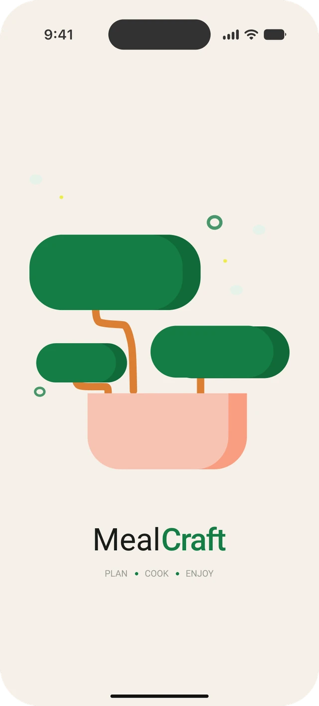
Splash screenThe first thing you see when the app opens.
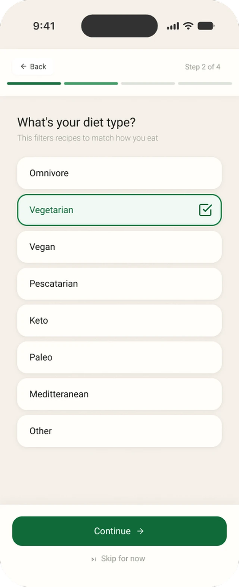
Step 2 · diet typeOne question per screen, with a progress bar and “Skip for now”.
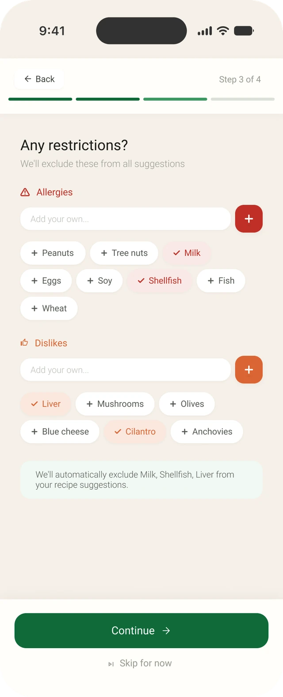
Step 3 · restrictionsAllergies and dislikes are left out of every suggestion.
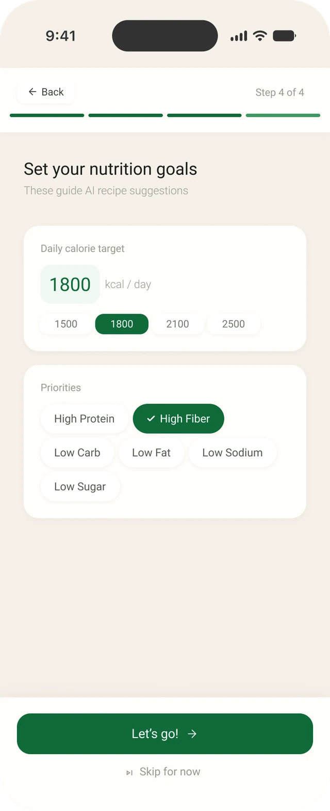
Step 4 · nutrition goalsA daily calorie target and priorities that guide recipe suggestions.
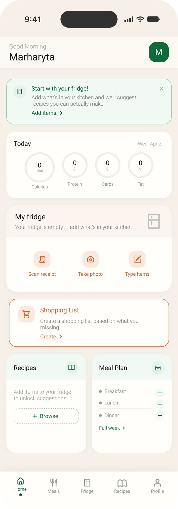
Home · first visitHome points you to the fridge first.
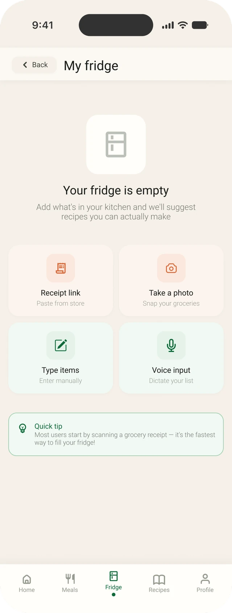
Fridge · emptyFour ways to add food: receipt link, photo, typing or voice.
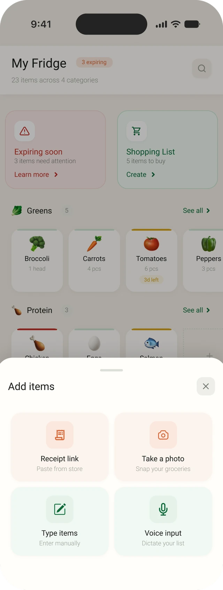
Fridge · add itemsThe same four options open over your fridge.
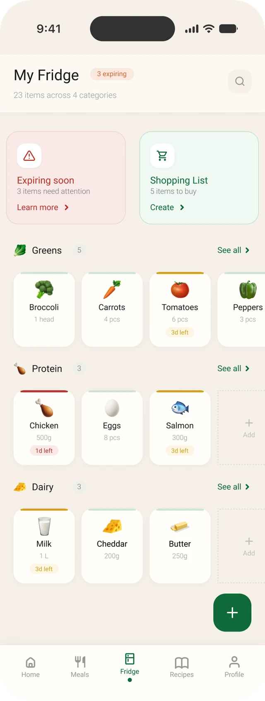
Fridge · fullItems grouped by category, with expiry badges.
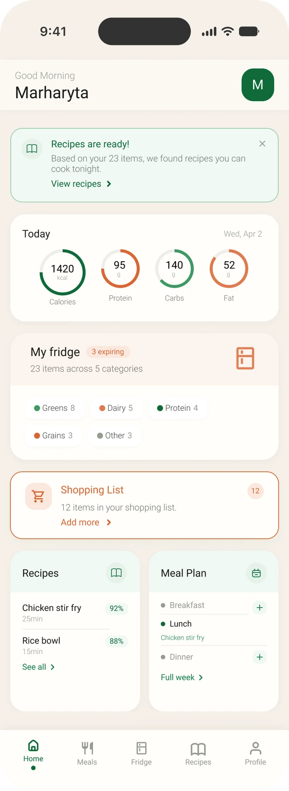
HomeToday's macros, the fridge, shopping list, recipes and meal plan in one place.
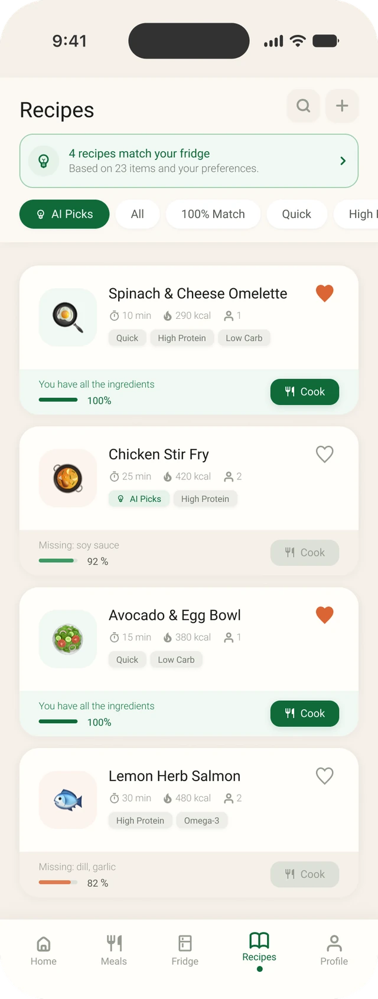
RecipesEach recipe shows how much you can make with what's in your fridge.
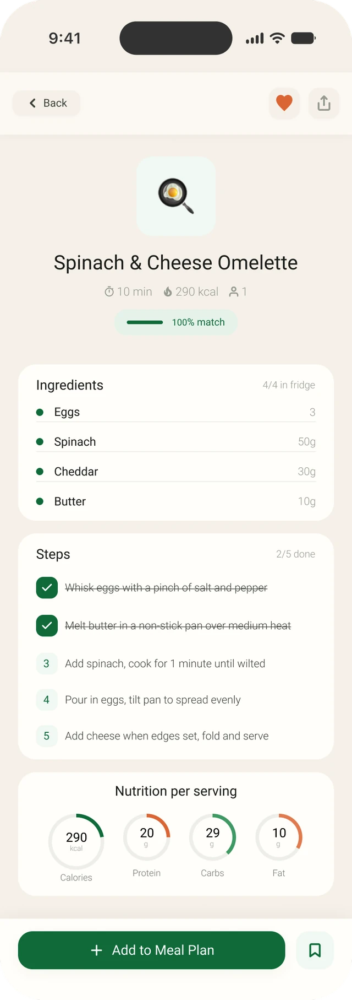
RecipeIngredients from your fridge, steps and nutrition per serving.
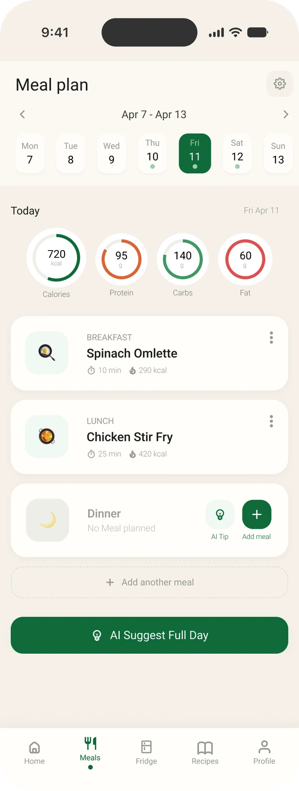
Meal planA day's meals, with an AI tip for the empty slot.
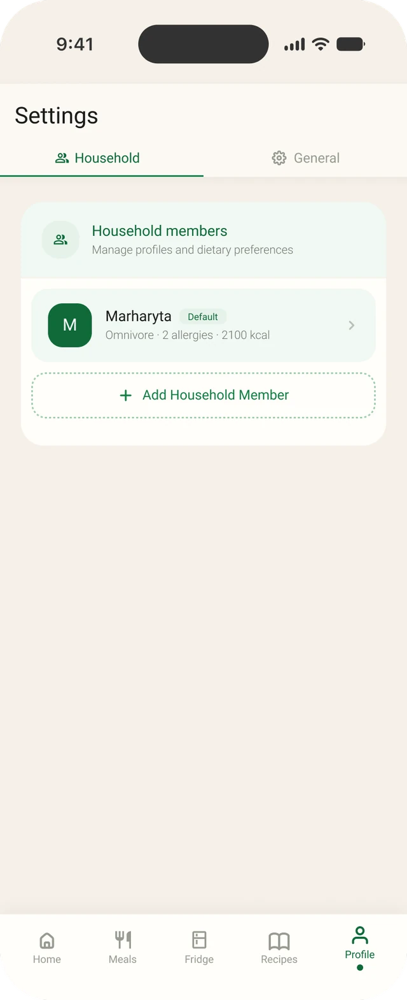
Settings · householdOne row per household member. Tap to edit.
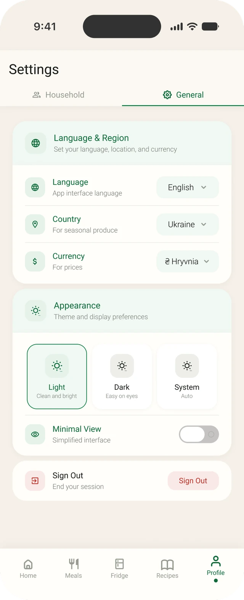
Settings · generalLanguage, region, appearance and sign out on one tab.
(06)
Heuristic evaluation
The new screens felt so much better to me. But “it feels better to me” isn't proof, and I knew that. So once the redesign was done, I went back to the original app and checked it properly against Nielsen's 10 usability heuristics. I wanted to see whether my changes actually fixed real problems, or whether I just liked them more.
I found problems in three places: onboarding, adding groceries and settings. Here's what I found in each, and what I changed.
01
The old onboarding was long, confusing, and kept throwing you back to the dashboard.
→ What I changed
4 steps
One question per screen
A progress bar
Continue goes forward, Back goes back
“Skip for now” on every step
→ Result
36→down to about~12
clicks to get through onboarding
What I found:
Visibility of system status, user control and freedom. After every step you're sent back to the dashboard and have to press Start again, with nothing telling you what's next.
Match between system and the real world. “Back to Setup” actually moves you forward.
Aesthetic and minimalist design. The very first screen asks about 6 different things at once.
User control and freedom. You can't skip the first step, and there's no “finish later” option.
Before · web app · screen recording (1.5x speed)After · mobile · prototype
02
In the old app, adding food was harder than it should be.
→ What I changed
Items grouped into category rows
A + button that's always there
An “Add” tile in each category
Expiry badges
Category required or with a default
“Fridge” in the bottom bar
Nutrition shown right in the meal and recipe screens
What I found:
Consistency and standards. After the first item, the Add button disappears and hides inside “Import.”
Error prevention. Category is optional and hidden under “More options,” so items without one disappear when you filter.
Flexibility and efficiency. Everything sits in one long list, with no groups or filters.
Match between system and the real world. “Pantry & Storage” instead of just “Fridge.”
Recognition rather than recall. Nutrition is a separate section, away from your meals.
Before · web app · screen recording (1.5x speed)After · mobile · prototype
03
Too many options available.
→ What I changed
Two tabs (General and Household)
No granular toggles
Tap a member to edit
What I found:
Aesthetic and minimalist design. Three settings tabs and a huge panel of customization toggles.
Aesthetic and minimalist design. Household preferences in a form that's always fully open.
Looking back, I should have evaluated the old app before redesigning it. I went with my gut first and only checked afterwards, so some of my choices were more about what I liked than about a real problem.
What I learned
A feature list tells you what an app does. Design decides how it feels to actually use it.
The biggest lesson goes back to the very beginning. When I handed my partner a list of features, I thought that was enough. In a way it was: everything on the list got built, and it all worked. But the app was still hard to use. None of the problems I found later were missing features. They were all about how things worked: buttons hidden in the wrong place, words that didn't make sense, too many questions at once. That's the part I missed back then, and it's now the part I find most interesting.